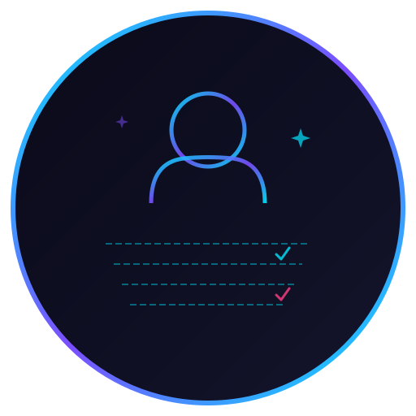

Flow Builder
v2.2
Add Page
Pin Tab
0
100%
Cancel
Analyze Flow
Rule Pack
Nielsen's 10 Heuristics
E-Commerce & Conversion
SaaS & Web Apps
Fintech & Banking
Personas
First-Time
Power User
Accessibility
Goal Context
Default Product Context
Step Inspector
×
Page URL *
Step Label
Expected Step Goal / Action (optional)
Step Metric / Drop-Off (optional)
Add Step
Cancel
Add Steps from Open Browser Tabs
×
Flow Name
Save
Cancel
Saved Flows
×
Flow Analysis Configuration
×
Flow Journey Report
▼
synthux — flow analysis logs
×
0 pages · Ready